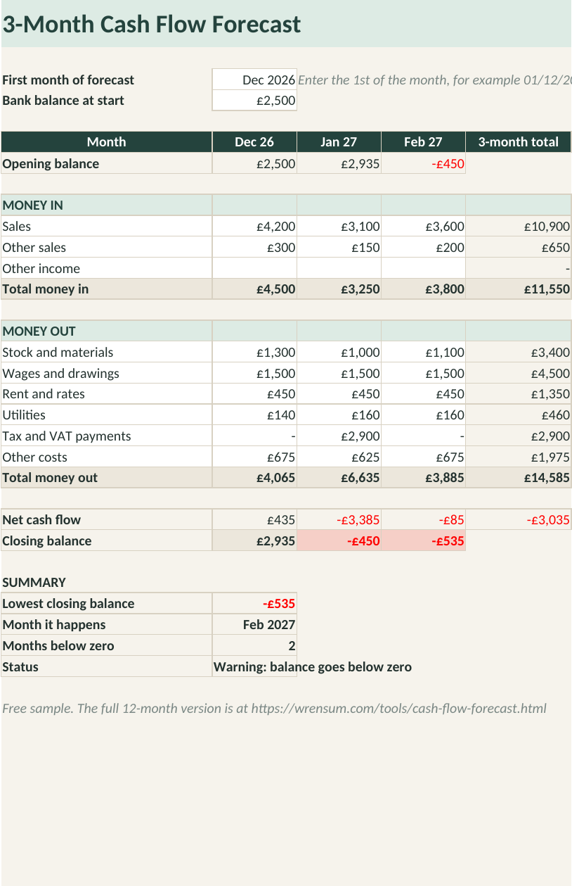

Free 3-month cash flow forecast template
A simple Excel cash flow forecast for a UK sole trader or small firm. Type what you expect to come in and go out for the next three months and see your bank balance at the end of each one.
Download the free templateExcel file (.xlsx). Free, with no sign-up and no password.

What is in it
- Three months, starting from any month you choose
- Three income rows and six cost rows you can rename
- Opening and closing bank balance for each month
- A summary showing your lowest balance and the month it falls in
- Any month that ends below zero highlighted in red
How to use it
- Enter your first month and your bank balance at the start of it.
- Type the money you expect to come in and go out each month, on the date the cash actually moves.
- Read the closing balance row and the warning in the summary.
What the full version adds
This is a cut-down sample of the 12-Month Cash Flow Forecast (£9). The full version covers a whole year in place of three months, which is what shows a quiet season, an annual bill or a tax payment coming. It also has five income rows and twelve cost rows in place of three and six, a dashboard that gives the answer in plain English, a what-if switch, a UK VAT and tax-date watch, a printable report and built-in checks.
| Free sample | Full version | |
|---|---|---|
| Months | 3 | 12 |
| Income rows | 3 | 5 |
| Cost rows | 6 | 12 |
| Totals for the period | Yes | Yes |
| Dashboard with plain-English answers and charts | No | Yes |
| What-if switch | No | Yes |
| UK VAT threshold and tax-date watch | No | Yes |
| Printable report and built-in checks | No | Yes |
| Price | Free | £9 |
Questions
- What do I need to open it?
- Microsoft Excel. The file has also been tested in LibreOffice Calc. It contains no macros.
- Are the figures in it real?
- No. The file comes with example figures to show the format. You type over them.
- Does it handle VAT?
- Enter amounts including VAT and record your VAT payments in the row provided.
Want a quick answer from three figures first? Try the cash runway calculator.